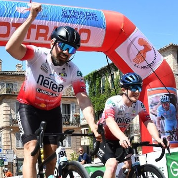

Marche · weekend
Non ci sono scuse.
Prossimo aggiornamento
–
Previsioni di 3B Meteo per dieci località delle Marche, divise tra mattina e pomeriggio. Scegli giorno e fascia e tocca una località per il dettaglio.
Previsioni di 3B Meteo e allerte Meteoalarm (tramite AccuWeather), aggiornate ogni mattina alle 6:38. Possono cambiare durante il giorno: controlla sempre il bollettino prima di uscire. La mappa è schematica, con la costa disegnata in modo approssimativo.